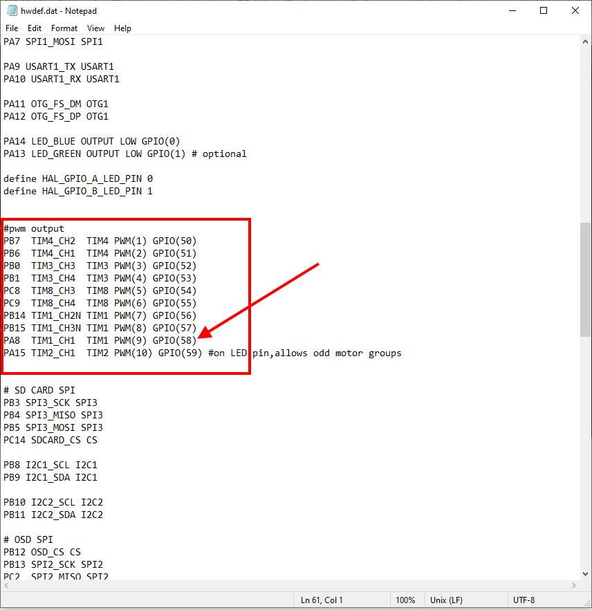

GPIOs¶
Note
in firmware versions 4.2 and later, the method for setting a PWM/SERVO/MOTOR output to be a GPIO function is changed. Instead of BRD_PWM_COUNT being used, the individual SERVOx_FUNCTION parameter is merely set to “-1”. If set to “0”, it remains a PWM output, unassigned to a function, but will not output any PWM signal unless commanded by scripting or a GCS. If the servo function is being “mirrored” to a remote device, as in the case of a DroneCAN or KDECAN ESC, then in order to change the autopilot board’s corresponding output pin to be a GPIO, but allow the SERVOx_FUNCTION to still be assigned to the remote device, the SERVO_GPIO_MASK parameter can be used to assign the board pin to be a GPIO without affecting the SERVOx_FUNCTION assignment for the remote device.
Warning
When upgrading to 4.2 or later from pre 4.2 firmware, be aware that previously defined GPIOs MAY have to be re-designated using the SERVOx_FUNCTION or, alternatively, the SERVO_GPIO_MASK parameter and that after upgrade any GPIO dependent release mechanisms (parachute, sprayers, etc.) may actuate until this re-definition is done.
General Purpose Input/Outputs (GPIOs) are used in ArduPilot for control of relays, actuators, LEDs, camera triggers, Start Button etc. Some functions also use a GPIO pin as an input, like RPM Measurement. Some autopilots provide dedicated GPIO pins (sometimes labeled “CAPTURE” pins). In addition, GPIOs can be obtained by re-configuring the PWM outputs.
Configuring GPIOS¶
Versions Prior to 4.2¶
In firmware versions before 4.2, the parameter BRD_PWM_COUNT determines how many of the PWM outputs are used for controlling motors/servos, and how many can be re-purposed and used as GPIO-style outputs.
If an autopilot has X outputs, then the number of available outputs that can be assigned via the SERVOx_FUNCTION parameter to be a relay, LED, etc. output is ( X - BRD_PWM_COUNT ). These GPIO outputs begin at the highest output number and proceed downward. So, for example, if the total outputs is 6 and BRD_PWM_COUNT = 4, then output 5/6 can be used for GPIO type functions.
The exception is autopilots using an IOMCU co-processor. These autopilots normally have 8 MAIN outputs, and several AUX outputs. Only the AUX outputs can be re-purposed as GPIOs, and the BRD_PWM_COUNT parameter only applies to this group of outputs.
For example, the Pixhawk has 8 MAIN outputs for motors/servos, and 6 AUX outputs. The default value for BRD_PWM_COUNT for this controller is 4, so AUX OUTPUT 5 & 6 can be used. More can be enabled for use as GPIO type output functions by decreasing BRD_PWM_COUNT.

Note
Changing BRD_PWM_COUNT requires a reboot of the autopilot for it to take effect.
Version 4.2 and later¶
in firmware versions 4.2 and later, the method for setting a PWM/SERVO/MOTOR output to be a GPIO function changed. In order to do this, the individual SERVOx_FUNCTION parameter is merely set to “-1”. If the servo function is being “mirrored” to a remote device, as in the case of a DroneCAN or KDECAN ESC, then in order to change the autopilot board’s corresponding output pin to be a GPIO, but allow the SERVOx_FUNCTION to still be assigned to the remote device, the SERVO_GPIO_MASK parameter can be used to assign the board pin to be a GPIO without affecting the SERVOx_FUNCTION assignment for the remote device.
Note
for autopilots using IOMCUs, if a “MAIN” output is configured as a GPIO, it can only function as an output (ie RELAY,etc.) not an input. “AUX” outputs can function either as inputs or outputs when configures as a GPIO.
Everytime the autopilot initializes, it sends a log message to the ground control station, showing which outputs are PWM/Oneshot/or DShot. The remaining higher numbered outputs are assigned as GPIOs.

GPIO “PIN” NUMBER¶
Some GPIO-based functions require that the GPIO “pin number” to be entered into an associated parameter.This pin number is assigned in the autopilot’s hardware definition file. Usually, the first GPIO capable output is assigned pin 50, the second 51, etc. So in the above case of the Pixhawk, AUX OUT 6 is pin 55.
You can verify an output’s GPIO pin number assignment easily. First, find its hwdef.dat file here and determine the GPIO pin number listed beside its output number, as shown below:
IOMCU “MAIN” output 1 thru 8 are mapped to GPIO pin numbers 101 to 108, respectively.
Note
Usually, changing any feature or function’s GPIO pin assignment will require a reboot for it to take effect.